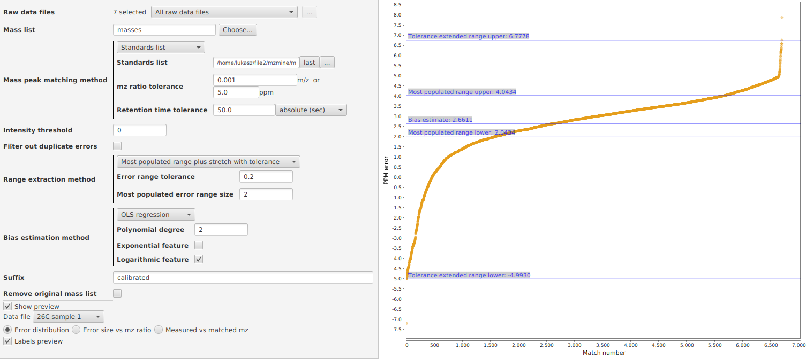
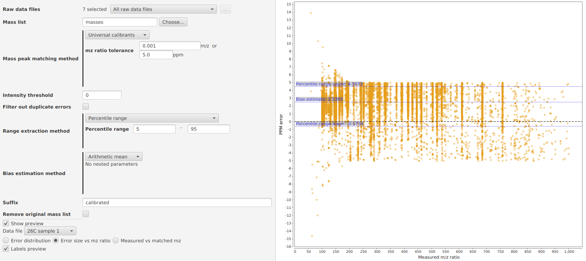
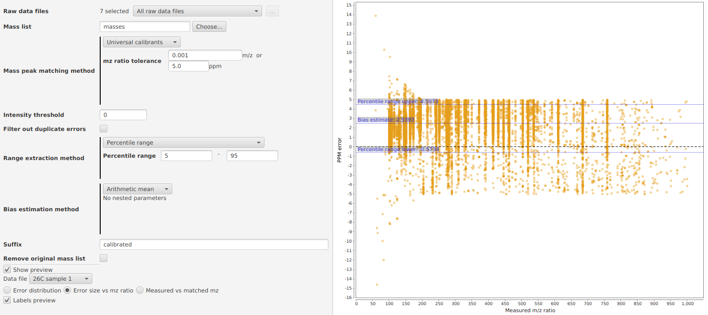

Mass calibration
Description
Mass spectrometry instruments might introduce mass measurement errors. Some of these errors are systematic and the
purpose of this module is to model these errors and calibrate mass spectra (on the mass list level) against them.
This module performs mass calibration in four stages: mass peak matching and obtaining errors,
error extraction, bias estimation and mass peak shifting.
First, the mass peaks are matched and thus the mass measurement errors are obtained. This is done by matching
detected mass peaks across all scans against a list of calibrants. The module supports two matching modes:
standard calibrants and universal calibrants.
Standard calibrants are a collection of ions (together with corresponding retention times) that are expected to
appear in the sample. This is provided by the user (see below for details of the format) and can be very specific
to the experiment from which the samples come and thus provides additional flexibility.
Universal calibrants are a collection of ions that are typically found in mass spectrometry experiments. The module
currently uses the
lists available at this link as a source of m/z signals typically found in positive (+ve) and negative (-ve)
ionization modes. The lists used come from the publications
Keller et al. Interferences and contaminants encountered in modern mass spectrometry.
Anal Chim Acta, 2008 [1] and
Hawkes et al. An international laboratory comparison of dissolved organic matter composition by high resolution
mass spectrometry: Are we getting the same answer? Limnol Oceanogr Methods, 2020
[2].
To match the mass peaks present in the raw samples a certain tolerance for m/z ratio and retention
time is used and if a single candidate calibrant is found within the tolerance ranges for a given mass peak, a match
is considered. All scans (mass lists) are independently matched against the list of calibrants and then the
collective distribution of errors across all scans is used to model errors globally across whole dataset (typically
a single experimental sample).
As ions are present in the mass spectra across certain characteristic timeframes, a single ion might have
corresponding mass peaks across multiple scans (mass lists). When treating them separately, multiple errors will be
added to the distribution. A simple approximation (that the module optionally uses) to matching each ion present
just once and adding just a single error for a matched ion would be to filter the duplicate error values from the
distribution obtained by matching all mass lists separately. To facilitate filtering-out noise, an intensity
threshold is used, so that only mass peaks with intensity above the threshold are considered for matching.
Then having a list of matches, measurement errors are calculated, their distribution is built and the measurement
bias is estimated. Currently m/z ratio PPM error type is used. A certain subset of the distribution of errors needs
to be extracted as likely not all errors come from correct matches, ie: when a wrong match is made an error value is
obtained that is not substantial towards the estimation of measurement error. We model this substantial error subset
by extracting a high-density error range from the distribution.
The module supports two modes of error range extraction: percentile ranges and extraction of most
populated range of certain max size possibly stretched with a fixed tolerance in the error size.
Percentile range mode is much simpler and more manual in nature. Lower and upper percentile (by default 25th and
75th, respectively, to reproduce interquartile range) are required and all errors within the range are extracted and
used for further error modeling.
The other mode is an attempt to make the extraction more autonomous and to capture it in two parameters and a method
that scales better across more varied set of datasets. This is done in two steps, first a range of errors with
a maximum allowed length such that it contains the most errors in it is found. Then this range is additionally
extended with a certain tolerance such that if there is an error within the tolerance of any of these errors that
are already in the range, the range is extended to include this newly considered error and the process continues
until the range cannot be extended anymore to include any new errors within the tolerance, ie: if errors outside the
range exist, they are further away then the tolerance parameter. This resembles single-link clustering, but with an
upper bound on what can be merged together.
Then having extracted the substantial subset of errors from the initial distribution, a systematic error of
measurement is modeled. The module supports three modes of bias estimation: arithmetic mean,
KNN regression and OLS regression.
The first mode is calculating the arithmetic mean of the extracted errors. The bias is estimated globally - a single
value that is optimized globally for the whole dataset. This mode is more suitable for datasets where not enough
matches and errors were extracted to reliably model the trend.
The two other are regression methods. They try to model the trend exhibited by the relationship of error size vs
measured m/z ratio based on the data extracted in previous stages.
OLS regression minimizes the mean squared error between the predicted trend and the datapoints in the dataset.
Available features include power features (polynomial trend), logarithmic feature and exponential feature. By
default, linear trend is fitted. This mode is suitable for datasets with enough data, that exhibit clear and strong
trend, especially if a suitable approximation is known a priori.
KNN regression finds a certain number of closest neighbors in the error vs m/z dataset. The number of neighbors is
set by a chosen percentage of all the errors present in the dataset and the closest neighbors are found by the
absolute difference of the m/z values. Then the arithmetic mean of the neighbors' errors is calculated and provided
as an estimate of the error of the sample m/z in question. This mode is suitable for datasets with enough data, when
the trend is not necessarily clear or strong. It does not require any explicit approximations, and the estimated
trend is based mostly on the dataset. This allows the trend to match the dataset closely without introducing
additional assumptions on how the variables are related.
After estimating the mass measurement bias, mass lists across all scans are calibrated according to the model. This
is done by shifting all mass peaks in the mass lists against the bias estimate which might either be the global
estimate or an estimate based on the mass peak m/z ratio and the regression model. The resulting mass spectra are
calibrated accounting for the systematic error of mass measurement modeled in the above process.
Notes:
- If you want to use standards list mode, but want to ignore retention time, you can use very large retention time
tolerance. If you do not have retention time for the calibrants, you can put any values and compensate
with large tolerance. This will effectively ignore retention time while using the standards list mode.
- When estimating mass error with regression, error range extraction should become less important, as the actual
calibration is done with a local, more accurate error estimate. This is especially the case with
a lot of quality matches and a large, representative distribution of errors.
- As usually, there exists the issue of possible overfitting when modeling the errors with regression. The range
of larger m/z values (800+) is especially exposed to that as it usually has far less matches and errors than
smaller values have.
- In case of mass calibration, it should be safer to underfit than overfit. Thus, for instance, it is recommended
that blank samples are calibrated using the global bias estimate as they will likely give a small number of
matches.
- All of the selected raw datafiles are calibrated independently (see below for module parameters description).
The module currently does not report any statistics or performance measures on the calibration (this would be
one of many valuable upgrades to the module). As such, it is important that the user verifies the extracted
errors and bias estimates when batch processing large number of samples. This is especially important when
calibrating different types of samples (like blanks) or using datafiles coming from different experiments.
The preview charts are a great way to gain visual insight into the dataset and how the calibration performs.
A quick look at the preview and a possible tweaking of the parameters should often be enough when calibrating
new types of similar samples.
Method parameters
- Raw data files
- The raw datafiles to calibrate. Each selected datafile is calibrated independently in a separate task.
- Mass list name
- Name of the mass lists to be calibrated. The mass lists must be previously generated for each scan by
the Mass detector module.
- Mass peak matching method
- Method used to match mass peaks from the datafile mass lists against the calibrants.
- Standards list
-
- Standards list
- File with a list of standard calibrants - ion formulas together with retention times. This is the list
that the mass peaks are matched against, the list should contain ions that are expected to appear in
the dataset. Currently spreadsheet (xls and xlsx) and csv files are supported. The first column is the
retention time given in minutes, second column is the ion formula string. Third column is an optional
calibrant name. First row (column headers) is ignored. Sample standards list file:

- m/z ratio tolerance
- The max difference in m/z ratio between an actual measured mass peak and a calibrant to consider a
match
- Retention time tolerance
- The max difference in retention time between an actual measured mass peak and a calibrant to
consider a match
- Universal calibrants
-
- Ionization mode
- The ionization mode for which an appropriate universal calibrants list is used.
- m/z ratio tolerance
- The max difference in m/z ratio between an actual measured mass peak and a calibrant to consider a
match
- Intensity threshold
- Only mass peaks with intensity above this threshold are considered for matching.
- Filter out duplicate errors
- The collective distribution of all errors obtained by matching all mass lists separately will be filtered to
remove duplicate errors.
- Range extraction method
- Method used to extract errors considered substantial to bias estimation.
- Most populated range plus stretch with tolerance
-
- Range tolerance
- This is the max distance between errors to be included within the same range. The errors are PPM m/z
ratio errors and this is the unit of the range tolerance parameter. See above description for more
details, when the range is extended this parameter is used to decide whether the range should be
stretched to include the next closest error. Use zero to skip this step, ie: do not extend the range
after the most populated fixed length range is found.
- Most populated error range size
- This is the max length of the range containing most errors. The errors are PPM m/z ratio errors and this
is the unit of the range size parameter. See above description for more details. Use zero to skip this
step, ie: do find the most populated range as the basis for later extension with range tolerance, in
such case the distribution is split into subranges containing all the errors within the tolerance and
the biggest such subrange is used. When both these parameters are set to zero, no error extraction from
the distribution takes place and all errors obtained by matching with calibrants are used for the bias
estimation.
- Percentile range
-
- Percentile range
- The percentile range of errors to extract, as distributed over the error size.
- Bias estimation method
- Method used to model and estimate mass measurement bias.
- Arithmetic mean
- KNN regression
-
- Nearest neighbors percentage
- The number of nearest neighbors used for error prediction, this is given as a percentage of all
the extracted errors.
- OLS regression
-
- Polynomial degree
- The degree of polynomial trend used, the summand powers of the polynomial will be the OLS regression
features. Use 0 for constant component, 1 for linear, 2 for quadratic and so on.
- Exponential feature
- When selected, an exponential feature exp(x/10) is included. Argument is divided by 10 to make sure the
typical value ranges fit within java doubles.
- Logarithmic feature
- When selected, logarithmic feature ln(x) is included.
- Suffix
- This string is added to the resulting calibrated mass list name as a suffix
- Remove original mass list
- If checked, original mass list will be removed and only calibrated version remains
- Show preview
- If checked, preview charts are displayed.
- Data file
- Data files used for preview.
- Labels preview
- When selected, labels such as extraction range and bias estimation value markers plus additional trend
extraction details are displayed on the charts. Deselecting can come in handy when the charts get cluttered with
overlapping labels.
Visualization and module setup examples


 


 This help file was last updated on 5th September 2020.
This help file was last updated on 5th September 2020.